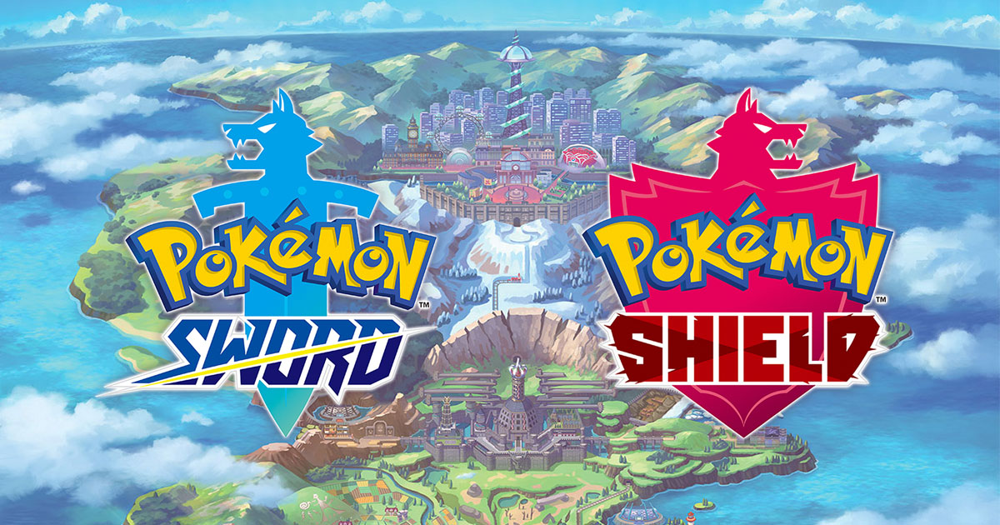
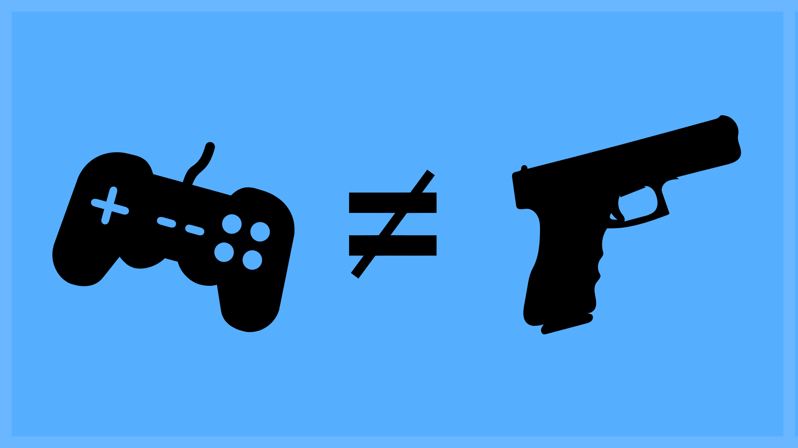

Exploring the intersection of gaming, technology, and culture through thoughtful analysis and commentary.
5
Published Articles
Gaming
Primary Focus
2019-2023
Publication Range
Filter by Category
Game Review
8 min read
January 2019
2.1k views
The Return to the Kingdom of Hearts
Explore the latest installment in the beloved Kingdom Hearts series and what it means for long-time fans and newcomers alike after a 13-year wait.
Kingdom HeartsSquare EnixJRPG
Game Review
6 min read
March 2020
1.8k views
Final Fantasy VII Remake - The Next Big Thing
The return of a classic JRPG that redefined gaming, now reimagined for a new generation with stunning visuals and enhanced gameplay.
Final FantasyRemakePlayStation
Industry Analysis
7 min read
November 2019
3.2k views
Death Stranding: Forming a Connection for a Better Tomorrow
Explore Hideo Kojima's ambitious new game that introduces a whole new genre: the Social Strand System and its impact on gaming.
Hideo KojimaInnovationSocial Gaming

Game Review
5 min read
November 2019
2.7k views
A New Way to 'Catch Them All'!
Explore the new features and changes coming to the Pokémon franchise with Pokémon Shield and Sword for the Nintendo Switch.
PokémonNintendo SwitchDynamax
Education
4 min read
September 2019
1.5k views
Searching for a Place to Belong: The Role of Video Games in College Life
Explore how video games can enhance the college experience by fostering community, developing social skills, and providing stress relief.
EducationCommunitySocial Skills

Social Commentary
10 min read
June 2023
4.1k views
Digital Worlds with Real World Consequences
An in-depth exploration of the complex relationship between video games, violence, and society, debunking common misconceptions.
Social IssuesResearchMedia Analysis
Stay Updated
Get notified when I publish new articles about gaming, technology, and industry insights.
Article
The Return to the Kingdom of Hearts
Release Date: January 29, 2019
Platforms: PlayStation 4, Xbox One
On January 29th, following a 13 year hiatus, Japanese developer Square Enix released the highly anticipated "Kingdom Hearts III" worldwide for Playstation 4 and Xbox One platforms to complete the popular trilogy.
The development of Kingdom Hearts III left many fans wondering if they'd ever see the title released in their lifetime. Square Enix ran into many speed humps when they tried to run Kingdom Hearts 3 on their now outdated Luminous Engine (which was used to power another Square Enix title Final Fantasy XV). According to the Kingdom Hearts Director; Tetsuya Nomura, "Due to the impact of changing the game engine to Unreal Engine 4 and with the full support of Epic Games, we'll be able to progress the game smoothly". With Square Enix using Unreal Engine 4 in the development of Kingdom Hearts III, they were able to do things they weren't able to do with the Luminous Engine such as vivid colors, shadows and image rendering. Although changing the game engine did slow down the development of Kingdom Hearts III, it wasn't the only hurdle. According to Lead facial animator, Kayoko Yajima, "Disney wanted their characters to be showing less teeth,' or 'their eyelids needed to move more differently". In other words, they wanted to preserve the soul and authenticity of the beloved characters.
Kingdom Hearts is a Japanese Role Playing game (JRPG) about a 14-year-old boy named Sora. The initial story line focuses on the day Sora's home, Destiny Island, was attacked by a dark entity called "The Heartless". After Sora's friends go missing, he is chosen by a magical Keyblade to rescue his friends and defeat the Heartless. Having to leave the island, Sora is joined by two iconic Disney characters, Donald Duck and Goofy to travel to distant worlds.
In the Kingdom Hearts series, characters from Square Enix's Final Fantasy series have crossed over into worlds created by Disney. Every Kingdom Hearts game in the series contains different worlds and characters from 50 years of Disney history. In Kingdom Hearts I and II, Disney worlds like Pride Lands from The Lion King or Agrabah from Aladdin have been styled specifically for Kingdom Hearts. In Kingdom Hearts III however the worlds were built completely different. Square Enix used computer generated (CG) film pieces to create the exact worlds from the beloved Disney films.
Before the whole Kingdom Hearts projects, Disney had other ideas for videos games. At the time Buena Vista (also known as Disney Interactive Studios) was developing unprofitable educational games. It was later decided that Buena Vista would stop developing Disney games and instead would licenselicense out Disney properties to other developers. After many of the licensees were only producing low-quality games for quick profit, Square Enix pitched an idea that was far outside of Disney's comfort zone. The developer wanted to produce a game that didn't just focus on one particular movie but a plethora of Disney Intellectual Properties (IPs) that would later evolve into something memorable and long-lasting.
Although newcomers to the series might have a hard time understanding the storyline, Square Enix has provided a way to make Kingdom Heart III more appealing to fans and none-fans alike by including a brief recap of The Kingdom Hearts Trilogy thus far.
It's been a long wait and Kingdom Heart III's story holds true to its counterparts.
"Kingdom Hearts III" can be downloaded digitally or purchased physically at a retail price of $59.99 for the Playstation 4 and Xbox One platforms.
Kingdom Hearts III Trailer
The Return of a Classic: Final Fantasy VII Remake
Release Date: March 3, 2020
Platform: PlayStation 4
The world has fallen under the dominion of the Shinra Company, a corporation that has monopolized the planet's very life force as Mako energy. Cloud Strife, a former member of Shinra's elite SOLDIER, lends his aid to the rebels, unaware that he will be drawn into an epic battle for the fate of the planet, while having to come to terms with his own lost past. This is the backstory to a timeless classic that has caused Final Fantasy VII to sell over 2 million copies in 3 days in Japan.
On March 3, 2020, Japanese Developer Square Enix will finally release "Final Fantasy VII Remake" for the PlayStation 4 Entertainment System. Final Fantasy VII is the seventh entry in the Final Fantasy series.
Final Fantasy VII is an extremely popular Japanese Role Playing Game (JRPG) that follows the story of an arrogant mercenary, Cloud Strife. The initial storyline begins when Cloud is hired by AVALANCHE, an eco-terrorist insurgency group who will do whatever they must in order to save the planet.
The story in Final Fantasy VII centers around an evil mega-corporation, Shinra Electric Power Company. Shinra sets up reactors around the world to extract mako; the planet's life, to use it for their own personal gain. Once AVALANCHE steps in to oppose Shinra's ambitions, after a while they discover that there are greater forces at work.
In 1997, Final Fantasy VII won numerous awards. The JRPG won The Academy of Interactive Arts & Sciences first annual Interactive Achievement Award in the categories: Console Adventure Game of the Year, Console Role Playing Game of the Year. Along with winning awards for "Most Hyper for a game", "Best Ending" and "Best Print Ad".
Square Enix has decided to collaborate with Fortnite developer Epic Games to help deliver an unforgettable moment in gaming history. "We're humbled that Square Enix has chosen Unreal Engine 4 to recreate one of the world's most beloved video games of all time". Fans will finally get a chance to control their favorite characters in High Definition.
The original Final Fantasy VII game case contained 3 discs of game content. The Final Fantasy VII Remake will be broken down into multiple episodes. According to character designer Tetsuya Normura, "If we dedicated our time to a single release, we'd have to cut some parts, and additional parts would come in few, so rather than remake the game as a full volume, we decided to do multiple parts."
Final Fantasy VII is a masterpiece that must be experienced in order to fully understand why it is one of the greatest games of all time.
Final Fantasy VII Remake will make its triumphant return to the PlayStation 4 Entertainment System, March 3, 2020.
Death Stranding: Forming a Connection for a Better Tomorrow
Release Date: November 8, 2019 (PS4), Q2 2020 (PC)
Platforms: PlayStation 4, Windows PC
In the near future, mysterious explosions have rocked the planet, setting off a series of supernatural events known as the "Death Stranding." With creatures plaguing the landscape, and the planet on the verge of a mass extinction, it's up to Sam Bridges to journey across the ravaged wasteland and save mankind from impending annihilation.
The Action game /Strand game, "Death Stranding" stars a man named Sam Bridges, a "reputed" delivery man who must journey across a ravaged landscape crawling with otherworldly threats to save mankind from the brink of extinction. Along with the cargo that Sam must carry, he must also carry a baby which symbolizes... maybe I shouldn't ruin the story.
The main protagonist, Sam Bridges is portrayed by "Walking Dead" actor Norman Reedus. Actors, Mads Mikkelsen, "Doctor Strange", and Lindsay Wagner, "The Bionic Woman", to name a few; provide voice acting, motion capture and 3D scanning for "Death Stranding." Film director and author Guillermo del Toro is also featured.
"Death Stranding" will introduce a new gaming genre: Action/Strand or Social Strand System. According to Japanese designer, screenwriter and director Hideo Kojima's Twitter, "[Death Stranding] is not a stealth game. [You] could move subjectively but not [as] a FPS [first-person shooter] shooting game either. By incorporating the concept of connection(strand); it's [a] totally brand new genre called action game/strand game [social strand system]." This system capitalizes on the idea that what one player does on their journey could impact the journey of another.
In 2005, Kojima Productions was registered as a subsidiary to Japanese gambling company Konami. Kojima Productions is notably known for the "Metal Gear" series. However, in 2015 after a power struggle between Kojima Productions and Konami, Konami decided to make drastic changes, one which included the termination of Hideo Kojima and the disbanding of Kojima Productions. In the same year, Hideo Kojima reformed the Kojima Productions as an independent studio.
In order for "Death Stranding" to become the best game Hideo envisioned, partnerships would have to be made. During the reforming of Kojima Productions, Hideo announced that he would be partnering with Sony Entertainment.
In order for Kojima Productions to deliver a compelling project, Hideo announced that he'll be utilizing the Decima engine from Guerrilla games, which was used to create, "Horizon Zero Dawn," a game that won numerous awards in 2017. "The Decima engine has taken a 'quantum leap' forward in the past few years to get it ready for this project," said the CEO of Guerrilla Games, Herman Hulst.
A New Way to 'Catch Them All'!
Release Date: November 15, 2019
Platform: Nintendo Switch
Welcome to the Galor Region, where the countryside is full of life and the cities are contemporary. The plains are vast and the mountains are covered in snow. In the Galor region, Pokémon battles are the main attraction and becoming the next Pokémon League Champion is the main objective.
On November 15, 2019, Japanese game developer Game Freak will release Pokémon Shield and Pokémon Sword for the Nintendo Switch game console. Pokémon Shield and Sword is the 17th installment in the Pokémon franchise and will introduce the 8th generation of Pokémon.
In the core Pokémon games, players are designated as Pokémon Trainers and have three main objectives:
To complete the regional Pokédex; which is an electronic encyclopedia that collects all of the available Pokémon species found in the respective region
To complete the national Pokédex by transferring Pokémon from other Pokémon games
To train a team of powerful Pokémon to battle other Trainers so they may eventually win the Pokémon League and become the regional Champion
In Pokémon Shield and Sword, the idea of becoming a Champion has been enhanced to give Trainers a whole new strategic approach when it comes to Pokémon battles. For example, a new feature called "Dynamax", will be introduced where Pokémon power up and grow much larger than normal. The Dynamaxed Pokémon's moves will also change, causing them to be much stronger than intended. This gives the player a whole new way to experience Pokémon battles in the Galor Region.
There are over 800 different species of Pokémon but unlike previous core Pokémon games, not all existing species of Pokémon will be available in Pokémon Shield and Sword. According to Producer Junichi Masuda, "the Switch's hardware quality made it easier for Pokmon to be unique and expressive, and the designers had to balance importing as many as possible and updating them to these high standards while still keeping development deadlines."
At the E3 Gaming Conference 2019, Nintendo announced that they will release a cloud-based service for the Nintendo Switch and mobile devices called, "Pokémon Home". This service will allow you to transfer Pokémon between all current Pokémon titles including the popular mobile game, Pokémon Go and Pokémon Shield and Sword. According to Masuda, "you'll be able to trade Pokémon from within Home as long as you have a smartphone with you."
Searching for a Place to Belong: The Role of Video Games in College Life
Published on: September 15, 2019
Author: Damien Hosea, Staff Writer
Since the early 1970s, video games have been stimulating and developing the minds of young adults. When I started at Los Angeles City College back in 2017, I noticed that video games were nonexistent on the campus. I believe that gaming plays a vital role in every student's education.
Most students who attend community colleges spend most of their time on the campus alone. They haven't made many friends and they're most likely looking for a place where they can fit in. Incorporating video games in school will help students find a circle of friends who they share similar interests with.
With many video games supporting multiple players such as "Super Smash Bros" and "Mario Kart", they force gamers into a social environment where they must communicate with their fellow teammates. This not only helps with their verbal skills but also their interpersonal skills. Even if the teammates don't know each other, a long-lasting friendship can easily stem from simply playing a game together.
I'm sure many can agree with me when I say "school is stressful, tedious and a little boring." With the help of video games, students can take their minds off of the stresses of school and focus on fun things like, "who's gonna be tank and who's gonna be healer in Overwatch."
Everyone needs to be a part of a like-minded crowd in order to feel like they belong. I think a video game lounge in The Student Union would be a huge help. This would not only bring students together but it would also help combat depression and antisocial disorder.
Digital Worlds with Real World Consequences
Published on: June 1, 2023
Author: Damien Hosea
Video Games are an electronic game that requires interaction from the player using an input device such as a joystick, keyboard or controller. Video games allow players to take the role of various different characters such as a sword wielding warrior in a 1 player game, or a gun blazing soldier in a team of 6. With the rising popularity of video games comes the concern that they do more harm than good.
In this essay, I will discuss violence in video games. There have been many mixed results from research surrounding violent video games and their linked to increased aggression, decreased empathy and its ability to desensitize players to real-world violence. I will then talk about mass shootings in the US and their link to violent video games. Next, I will discuss the benefits of playing video games and how video games are being used as a scapegoat to avoid facing a much larger issue within the United States.
In the US and Canada, the Entertainment Software Rating Board(ESRB) is an organization that assigns age and content ratings for consumers of video games. Ranging from rating E standing for "Everyone" up to M which stands for "Mature". Mature rating games are said to be suitable for teens because they contain intense violence, blood and gore, sexual content and/or strong language.
Grand Theft Auto is an open-world role playing game that is rated M for Mature. The player takes control of where the player controls 3 main characters as they complete various missions set in a fictitious city of Los Angeles. The main storyline begins with the player robbing a bank and stealing money. After a long and heated shootout with the police, you make a get away with all the stolen money. To any person learning about this game for the first time would be so excited yet enthralled by the idea of being able to play out a bank robbery. Given the content of this game, it can be very easy to make the claim that "exposing children to this type of interactive media can make someone violent". However, video games aren't to blame for people committing crimes in real life.
In Conclusion, video games do indeed contain violence and have the potential to increase aggression but they don't cause mass shootings. The minimal aggression that gaming can cause isn't enough to influence harm to people in the real-world. Using video games as a justification to commit crimes is a clear indication of avoiding the harsh realities of terrorism in the United States. Dealing with guns would have a much greater effect than regulating video game content.